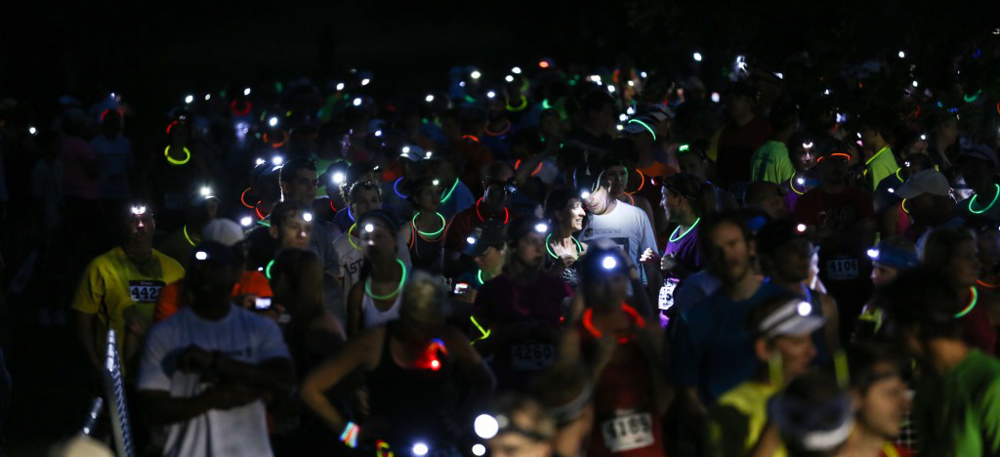
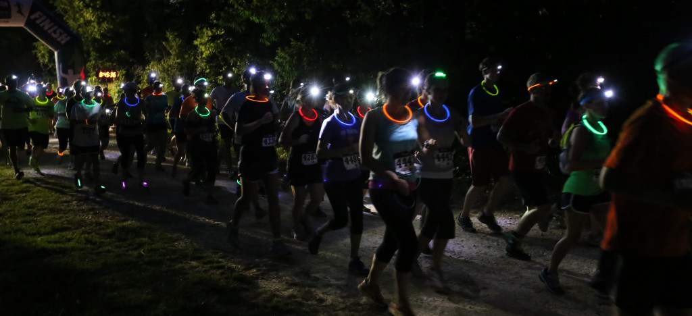

Usability Run
Menu
Usability Run
Information
Contact Us
Register
Information
Contact Us
Register
Previous Slide
◀︎
Next Slide
▶︎

Join us on the
March 22nd 2016
for the 2nd annual Usability Run

Find us on
#RunAtKnight
First slide details.
Current Slide
Second slide details.